| DOVE? | In Friuli, Tramonti di Sopra, Lago di Redona |
| COME? |
- PN-Maniago-Meduno-Lago - UD-Spilimbergo-Meduno-Lago - POI 800 metri di pista forestale con SUZUKI, MOUNTAIN BIKE o a PIEDI |
| ACCOGLIENZA? | Certo! Un buon bicchiere per tutti. |
| SORPRESE? |
- Un borgo medievale 1759 - Boschi a volontà, sentieri, rocce - IL VILLAGGIO DI PIETRA - La Madonna 'Pacioccona' del 300 - La Madonna 'Del Ciclamino' Sagra 8 Settembre - La 'SCULTURA IN SASSO' - Il CONVENTINO arcato da restauro - Il Libro degli OSPITI - La CACCIA AL TESORO per i ragazzi - Ospitalità |
| E POI? | FANTASIA, FANTASIA, FANTASIA! |
Il guerriero di Redona
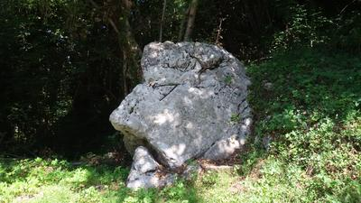Di qua...
L'accoglienza
L'arrivo
Bussate e...
...vi sarà aperto
Gli aperitivi...
Home sweet home
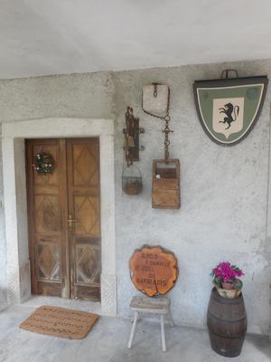Tutti a tavola
Interni
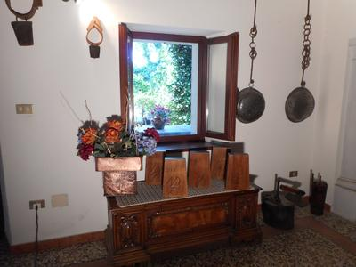Ospiti amicissimi
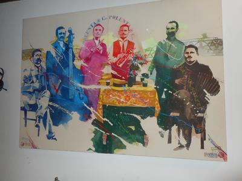Spuntino rustico
Interni
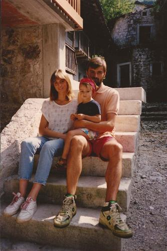 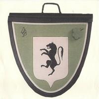Buon
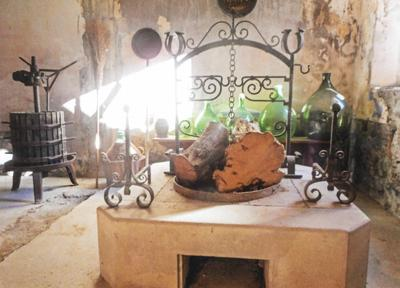Natale!
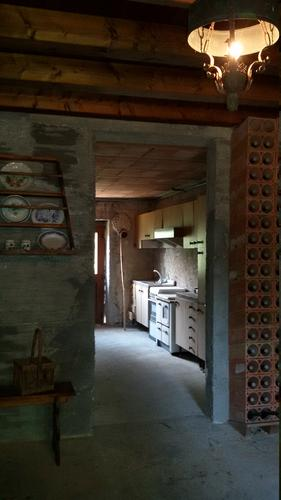Ospiti

di riguardo
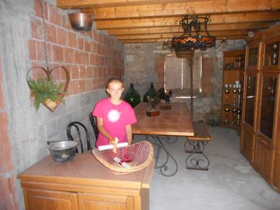Giovanni da Roma
Sara dal Friuli

Gli stemmi dei casali
L'affresco
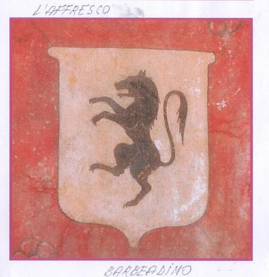Angoli
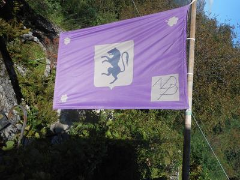 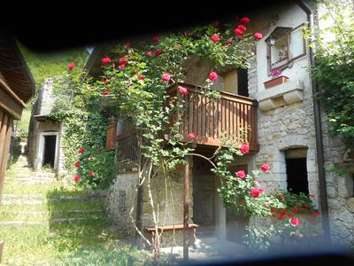Residenza De Paoli
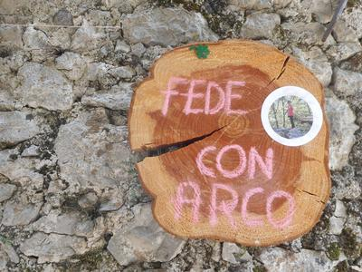Il casale Annalisa
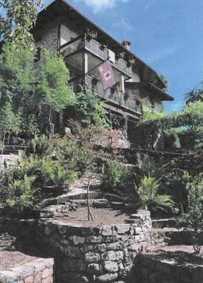La cjasa di Davide
Il riposo del guerriero
Creazione d'artista

La Madonnina Pacioccona del '300

La Madonna del Ciclamino
Sagra dell'8 Settembre
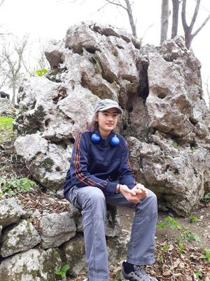
8 Settembre 1997 - Bel Tempo.
Prima Sagra della Madonna del Ciclamino
Collocazione nuova statuetta nell'antica ancona
ripristinata e arricchita e corona di 5 angioletti
Messa Grande di don Livio Tonizzo di Campone.
Coro di 10 Boy Scout con chitarre.
67 presenze inaugurano il Registro degli Ospiti
Degustazione specialità con brindisi augurali.
Articolo e Foto su Bollettino Valmeduna
Auguri! Auguri! Auguri!
Sagra
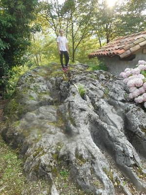Andrea l'artista
del pennello
Rustici
di borgata
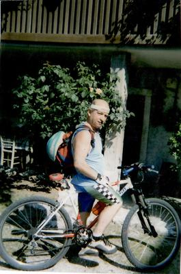Cantine
aperte
Le allegre brigate
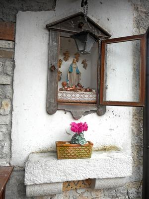
Le ragazze di una volta
Patate...
fagioli...
zucche...
noci...
uva...
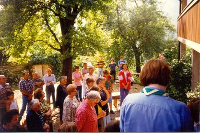Campioni in mountain bike
Il villaggio di pietra
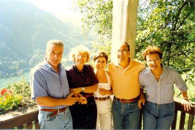Panorami fiori e bandiere
Nilo
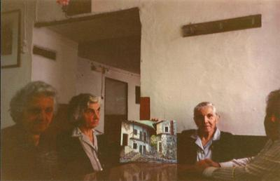